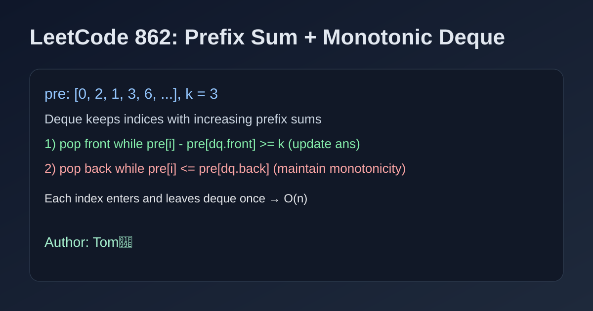

LeetCode 862: Shortest Subarray with Sum at Least K (Prefix Sum + Monotonic Deque)
LeetCode 862Prefix SumDequeSource: https://leetcode.com/problems/shortest-subarray-with-sum-at-least-k/

English
We build prefix sums pre[i]. For each i, we need earliest j with pre[i]-pre[j] >= k. A deque keeps candidate indices with increasing prefix sums. While current prefix makes front valid, update answer and pop front. While current prefix is smaller than back prefix, pop back to maintain monotonicity.
class Solution { public int shortestSubarray(int[] nums, int k) { int n=nums.length,ans=n+1; long[] pre=new long[n+1]; for(int i=0;i<n;i++) pre[i+1]=pre[i]+nums[i]; java.util.ArrayDeque<Integer> dq=new java.util.ArrayDeque<>(); for(int i=0;i<=n;i++){ while(!dq.isEmpty() && pre[i]-pre[dq.peekFirst()]>=k) ans=Math.min(ans,i-dq.pollFirst()); while(!dq.isEmpty() && pre[i]<=pre[dq.peekLast()]) dq.pollLast(); dq.offerLast(i);} return ans==n+1?-1:ans; } }func shortestSubarray(nums []int, k int) int { n:=len(nums); pre:=make([]int64,n+1); for i,v:=range nums { pre[i+1]=pre[i]+int64(v) }; ans:=n+1; dq:=[]int{}; for i:=0;i<=n;i++ { for len(dq)>0 && pre[i]-pre[dq[0]]>=int64(k) { if i-dq[0]<ans { ans=i-dq[0] }; dq=dq[1:] }; for len(dq)>0 && pre[i]<=pre[dq[len(dq)-1]] { dq=dq[:len(dq)-1] }; dq=append(dq,i) }; if ans==n+1 { return -1 }; return ans }class Solution{public:int shortestSubarray(vector<int>& nums,int k){int n=nums.size(),ans=n+1;vector<long long> pre(n+1);for(int i=0;i<n;i++)pre[i+1]=pre[i]+nums[i];deque<int> dq;for(int i=0;i<=n;i++){while(!dq.empty() && pre[i]-pre[dq.front()]>=k){ans=min(ans,i-dq.front());dq.pop_front();}while(!dq.empty() && pre[i]<=pre[dq.back()])dq.pop_back();dq.push_back(i);}return ans==n+1?-1:ans;}};from collections import deque
class Solution:
def shortestSubarray(self, nums, k):
n=len(nums); pre=[0]
for x in nums: pre.append(pre[-1]+x)
dq=deque(); ans=n+1
for i,s in enumerate(pre):
while dq and s-pre[dq[0]]>=k:
ans=min(ans,i-dq.popleft())
while dq and s<=pre[dq[-1]]:
dq.pop()
dq.append(i)
return -1 if ans==n+1 else ansvar shortestSubarray=function(nums,k){const n=nums.length,pre=Array(n+1).fill(0);for(let i=0;i<n;i++)pre[i+1]=pre[i]+nums[i];let ans=n+1;const dq=[];for(let i=0;i<=n;i++){while(dq.length && pre[i]-pre[dq[0]]>=k){ans=Math.min(ans,i-dq.shift());}while(dq.length && pre[i]<=pre[dq[dq.length-1]])dq.pop();dq.push(i);}return ans===n+1?-1:ans;};中文
先构造前缀和 pre[i]。对每个 i，希望找到最早的 j，满足 pre[i]-pre[j] >= k，这样子数组长度最短。双端队列里维护前缀和递增的下标：队首若已满足条件就更新答案并弹出；当前前缀和若更小，就弹出队尾保持单调性。
class Solution { public int shortestSubarray(int[] nums, int k) { int n=nums.length,ans=n+1; long[] pre=new long[n+1]; for(int i=0;i<n;i++) pre[i+1]=pre[i]+nums[i]; java.util.ArrayDeque<Integer> dq=new java.util.ArrayDeque<>(); for(int i=0;i<=n;i++){ while(!dq.isEmpty() && pre[i]-pre[dq.peekFirst()]>=k) ans=Math.min(ans,i-dq.pollFirst()); while(!dq.isEmpty() && pre[i]<=pre[dq.peekLast()]) dq.pollLast(); dq.offerLast(i);} return ans==n+1?-1:ans; } }func shortestSubarray(nums []int, k int) int { n:=len(nums); pre:=make([]int64,n+1); for i,v:=range nums { pre[i+1]=pre[i]+int64(v) }; ans:=n+1; dq:=[]int{}; for i:=0;i<=n;i++ { for len(dq)>0 && pre[i]-pre[dq[0]]>=int64(k) { if i-dq[0]<ans { ans=i-dq[0] }; dq=dq[1:] }; for len(dq)>0 && pre[i]<=pre[dq[len(dq)-1]] { dq=dq[:len(dq)-1] }; dq=append(dq,i) }; if ans==n+1 { return -1 }; return ans }class Solution{public:int shortestSubarray(vector<int>& nums,int k){int n=nums.size(),ans=n+1;vector<long long> pre(n+1);for(int i=0;i<n;i++)pre[i+1]=pre[i]+nums[i];deque<int> dq;for(int i=0;i<=n;i++){while(!dq.empty() && pre[i]-pre[dq.front()]>=k){ans=min(ans,i-dq.front());dq.pop_front();}while(!dq.empty() && pre[i]<=pre[dq.back()])dq.pop_back();dq.push_back(i);}return ans==n+1?-1:ans;}};from collections import deque
class Solution:
def shortestSubarray(self, nums, k):
n=len(nums); pre=[0]
for x in nums: pre.append(pre[-1]+x)
dq=deque(); ans=n+1
for i,s in enumerate(pre):
while dq and s-pre[dq[0]]>=k:
ans=min(ans,i-dq.popleft())
while dq and s<=pre[dq[-1]]:
dq.pop()
dq.append(i)
return -1 if ans==n+1 else ansvar shortestSubarray=function(nums,k){const n=nums.length,pre=Array(n+1).fill(0);for(let i=0;i<n;i++)pre[i+1]=pre[i]+nums[i];let ans=n+1;const dq=[];for(let i=0;i<=n;i++){while(dq.length && pre[i]-pre[dq[0]]>=k){ans=Math.min(ans,i-dq.shift());}while(dq.length && pre[i]<=pre[dq[dq.length-1]])dq.pop();dq.push(i);}return ans===n+1?-1:ans;};
Comments